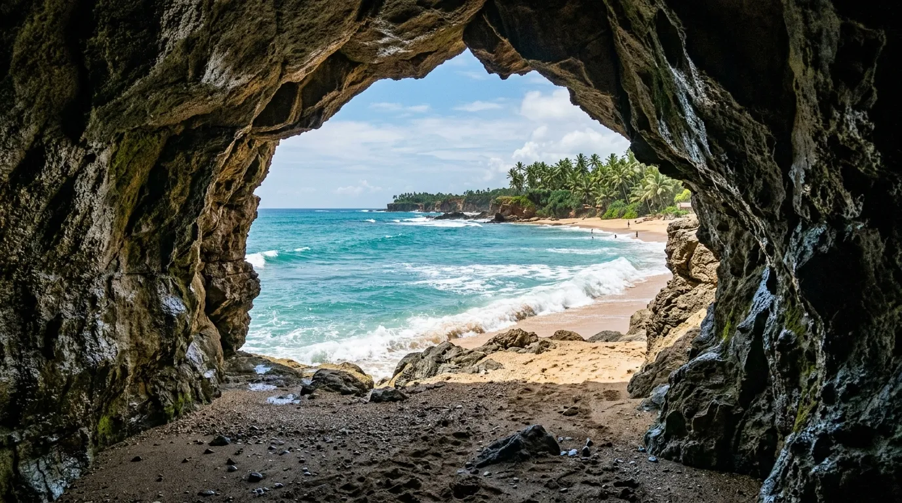

Di jajaran pantai eksotis Malang yang membentang di sepanjang Jalur Lintas Selatan (JLS), ada satu nama yang selalu berhasil mencuri perhatian karena keunikan sejarahnya: Pantai Goa Cina. Bukan hanya soal pasir putih dan ombak besar khas Samudra Hindia, pantai ini juga menyimpan kisah legenda yang membuatnya berbeda dari pantai selatan lainnya.
Bagi yang penasaran dengan pesona goa cina Malang secara lengkap, mulai dari sejarah, rute, harga tiket, hingga tips berkunjung, simak ulasan berikut ini.
Pantai Goa Cina bukan sekadar pantai dengan pasir putih dan ombak besar, tapi juga menyimpan kisah legenda biksu Tionghoa yang menjadikannya destinasi penuh misteri di selatan Jawa.
Sekilas Tentang Pantai Goa Cina
Pantai Goa Cina terletak di Dusun Tumpak Awu, Desa Sitiarjo, Kecamatan Sumbermanjing Wetan, Kabupaten Malang, Jawa Timur. Jaraknya sekitar 65-70 km dari pusat Kota Malang, dengan waktu tempuh sekitar 2 hingga 3 jam perjalanan darat menggunakan kendaraan pribadi.
Menariknya, nama "Goa Cina" sebenarnya bukan nama asli pantai ini. Dulunya, kawasan ini dikenal dengan nama Pantai Rowo Indah. Nama tersebut berubah setelah sebuah peristiwa pada sekitar tahun 1903, ketika seorang biksu Tionghoa diketahui bertapa di sebuah gua kecil dekat bibir pantai. Sang biksu kemudian ditemukan telah meninggal dunia di dalam gua tersebut, hanya menyisakan tulang belulang. Sejak saat itu, masyarakat setempat lebih mengenal pantai ini dengan nama Goa Cina, dan nama itu bertahan hingga sekarang.
Kisah tersebut turut menciptakan aura mistis yang menyelimuti pantai ini, menjadikannya destinasi yang memadukan keindahan alam, ketenangan, dan sejarah penuh misteri dalam satu tempat.
Pesona Alam yang Eksotis
Sebagai salah satu pantai eksotis Malang, Goa Cina menyuguhkan panorama yang begitu memikat. Hamparan pasir putih berpadu dengan air laut yang jernih, dikelilingi formasi karang dan tebing yang dramatis di beberapa sisi pantai. Kawasan ini bahkan memiliki tiga pulau karang kecil, yaitu Pulau Bantengan, Pulau Goa Cina, dan Pulau Nyonya, yang menambah keunikan lanskap pantai ini dibanding pantai selatan lainnya.
Ombak di Pantai Goa Cina tergolong besar dan khas pantai selatan Jawa pada umumnya. Fenomena unik yang terjadi di sini adalah pertemuan arus laut dari tiga arah berbeda, yaitu selatan, timur, dan barat, yang menciptakan gelombang tidak beraturan. Karena itulah, pantai ini tidak direkomendasikan untuk aktivitas berenang, namun justru menjadikannya spot yang menarik untuk menyaksikan gulungan ombak besar dari kejauhan.
Selain area pantai, terdapat pula sebuah gua yang menjadi asal-usul nama tempat ini. Gua tersebut berada di bukit karang yang bisa didaki pengunjung untuk menikmati pemandangan pantai dari ketinggian, sekaligus berfoto di titik-titik dengan latar belakang laut lepas yang memukau.

Aktivitas Seru di Pantai Goa Cina
Ada banyak hal yang bisa dilakukan wisatawan selama berada di kawasan Pantai Goa Cina, antara lain:
- Camping di tepi pantai. Berbeda dari pantai lain yang mengenakan biaya tambahan, berkemah di Goa Cina tidak dipungut biaya khusus. Bagi yang tidak membawa perlengkapan sendiri, tersedia penyewaan tenda dengan harga mulai Rp100.000 tergantung ukuran.
- Api unggun dan bakar ikan. Petugas pantai mengizinkan pengunjung menyalakan api unggun maupun membakar ikan selama tetap menjaga kebersihan area sekitar.
- Mendaki bukit karang menuju gua. Cocok bagi yang suka trekking ringan sambil menikmati panorama laut dari atas tebing.
- Berburu foto di spot ikonik. Formasi karang, gua, hingga hamparan pasir putih menjadi latar foto yang sangat instagramable.
- Menikmati sunrise maupun sunset. Pantai ini buka 24 jam, sehingga pengunjung bisa menyaksikan momen matahari terbit maupun terbenam sesuai preferensi masing-masing.
Rute Menuju Pantai Goa Cina
Dari pusat Kota Malang, rute yang bisa ditempuh adalah Gadang – Bululawang – Turen – Dampit – Sumbermanjing Wetan – Sitiarjo, hingga akhirnya terhubung dengan Jalur Lintas Selatan (JLS) menuju lokasi pantai. Alternatif lain adalah langsung mengikuti JLS yang kini sudah beraspal mulus dan menjadi jalur favorit wisatawan.
Sebelum sampai ke kawasan pantai, pengunjung akan melewati Jembatan Bajulmati yang membentang di atas muara laut sepanjang sekitar 80 meter, lengkap dengan desain tiang lengkung khas di bagian tengahnya. Dari jembatan ini, pintu masuk Goa Cina hanya berjarak sekitar 15 menit perjalanan.
Meski akses jalan sudah cukup baik, pengendara tetap perlu berhati-hati karena rute menuju pantai berkelok-kelok, melintasi kawasan hutan jati serta perkebunan dengan jurang di sisi kanan-kiri jalan.
Harga Tiket Masuk dan Jam Operasional
Berikut rincian biaya terbaru yang perlu kamu siapkan:
Pantai ini buka selama 24 jam setiap hari, sehingga wisatawan bisa berkunjung kapan saja, baik pagi, siang, sore, maupun malam hari bagi yang ingin berkemah.
Catatan: Pantai ini biasanya tutup sementara selama beberapa hari saat libur Lebaran, sehingga ada baiknya mengecek jadwal terbaru sebelum berangkat, terutama saat musim liburan panjang.
Tips Berkunjung ke Pantai Goa Cina
- Hindari berenang karena ombak di pantai ini cukup besar dan arusnya tidak beraturan akibat pertemuan tiga arus laut.
- Datang pagi atau sore hari untuk menikmati suasana terbaik sekaligus menghindari terik matahari siang.
- Siapkan kendaraan dalam kondisi prima, mengingat medan jalan menuju lokasi berkelok dan melewati area perbukitan.
- Bawa perlengkapan camping sendiri jika ingin berhemat, meski penyewaan tenda juga tersedia di lokasi.
- Jaga kebersihan pantai, terutama jika menyalakan api unggun atau membakar ikan selama berkemah.
- Cek jadwal buka-tutup sebelum berkunjung saat momen libur Lebaran, karena pantai ini biasanya tutup sementara di periode tersebut.
Kesimpulan
Pantai Goa Cina Malang membuktikan diri sebagai salah satu pantai eksotis Malang yang layak dijelajahi, berkat kombinasi panorama alam yang dramatis, formasi karang unik, dan kisah legenda yang menambah daya tariknya. Dari ombak besar khas selatan Jawa, gua bersejarah, hingga pengalaman berkemah di tepi pantai, semuanya menjadikan Goa Cina sebagai surga tersembunyi yang sayang untuk dilewatkan saat berkunjung ke Malang Selatan.
Catatan: Harga tiket, biaya parkir, dan kebijakan pengelolaan Pantai Goa Cina dapat berubah sewaktu-waktu. Disarankan untuk mengecek informasi terbaru sebelum berangkat.